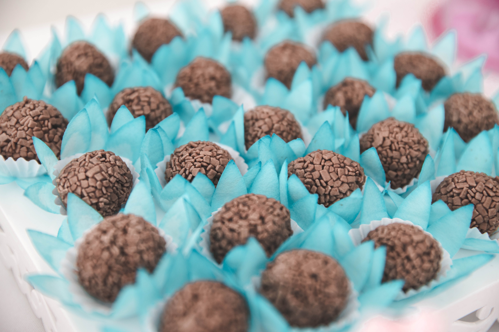

Receita de Pundim
-
Pundim:
- 1 lata de leite condensado (395g)
- 1 cebola média,picada
- 2 latas (medidas da lata de leite condensado) de leite
- 4 ovos inteiros
- 1 colher de chá de essência de baunilha (opcional)
- Calda de caramelo
- 1 xícara de açúcar
- 1/2 xícara de água
- Em uma panela, coloque o açúcar e a água. Leve ao fogo médio e deixe ferver, sem mexer, até obter uma calda de caramelo dourada. Cuidado para não queimar.
- Assim que atingir a cor desejada, desligue o fogo e despeje a calda em uma forma para pudim, espalhando bem pelo fundo e pelas laterais. Reserve.
- Pré-aqueça o forno a 180°C (temperatura média).
- No liquidificador, adicione o leite condensado, o leite, os ovos e a essência de baunilha (se estiver usando). Bata bem até obter uma mistura homogênea.
- Despeje essa mistura na forma caramelizada reservada.
- Cubra a forma com papel alumínio, vedando bem.
- Coloque a forma dentro de uma assadeira maior e adicione água quente na assadeira até atingir aproximadamente a metade da altura da forma do pudim. Isso ajudará a cozinhar o pudim em banho-maria.
- Leve ao forno pré-aquecido e asse em banho-maria por cerca de 1 hora a 1 hora e 30 minutos, ou até que o pudim esteja firme e dourado por cima.
- Retire o pudim do forno e deixe esfriar completamente em temperatura ambiente.
- Em seguida, leve à geladeira por algumas horas ou até ficar bem gelado.
- Para desenformar, passe uma faca ao redor do pudim para soltá-lo das laterais da forma. Coloque um prato de servir sobre a forma e vire de cabeça para baixo com cuidado. A calda de caramelo irá escorrer sobre o pudim.
- Corte o pudim em fatias e sirva gelado. Você pode decorar com raspas de limão, folhas de hortelã ou frutas frescas, se desejar.
-
Ingredientes:
-
Instruções:
-
1.Preparação da calda de caramelo:
-
2.Preparação do pudim:
-
Cozimento do pudim:
-
5.Servir
Relacionado:

Cupcake

Brigadeiro